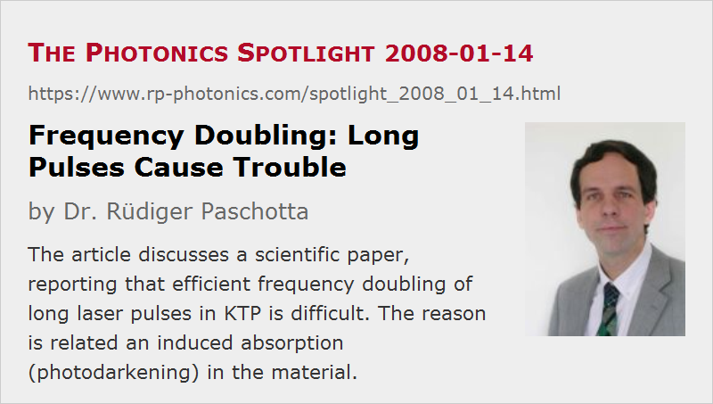

Frequency Doubling: Long Pulses Cause Trouble
Posted on 2008-01-14 as a part of the Photonics Spotlight (available as e-mail newsletter!)
Permanent link: https://www.rp-photonics.com/spotlight_2008_01_14.html
Author: Dr. Rüdiger Paschotta, RP Photonics Consulting GmbH
Abstract: The article discusses a scientific paper, reporting that efficient frequency doubling of long laser pulses in KTP is difficult. The reason is related an induced absorption (photodarkening) in the material.

Ref.: S. Favre et al., “High-power long-pulse second harmonic generation and optical damage with free-running Nd:YAG laser”, IEEE J. Quantum Electron. 39 (6), 733 (2003); encyclopedia articles on frequency doubling and photodarkening
Frequency doubling can be efficiently performed either by intracavity frequency doubling in a continuous-wave laser, or with a Q-switched laser (intracavity or extracavity). It thus seems surprising what the paper cited above reports: frequency doubling with long pulses is difficult – at least at high power levels.
The authors worked with a powerful Nd:YAG slab laser, producing pulses with 0.1-5 μs duration and a peak power of 1-2 kW. The high average power forced them to use extracavity doubling, as the thermal effects in the nonlinear crystal (made of KTP) would have been to strong to tolerate them within the laser resonator. With proper focusing, the optical intensity could easily have been made high enough for efficient doubling, but the trouble was that crystal damage set in well before a high efficiency was achieved. The problem is apparently the following:
- When a high second-harmonic intensity is present for a longer time (hundreds of microseconds), the KTP crystal becomes absorbing. Apparently, temporary color centers are the origin of this photodarkening. The color center formation may be related to two-photon absorption.
- Absorption of the high infrared intensity subsequently leads to damage. (The second-harmonic light is also absorbed, but has a lower intensity.)
This explains why frequency doubling with nanosecond pulses works better. In continuous-wave operation, the situation should be even worse, as the color centers would have even much more time to build up. A solution can be intracavity doubling, where far lower optical intensities are required for efficient conversion: the non-converted infrared light is “recycled” in the laser resonator. However, intracavity doubling is limited in average power, as mentioned above.
Of course, one may use a crystal material which does not have these temporary color centers. The authors reported slightly better results with LBO, but unfortunately without elaborating on damage and induced absorption. LBO is probably better in this respect, although it does need to be operated with higher intensities due to its lower nonlinearity. Even if damage is no issue, it is sometimes difficult to reach sufficiently high intensities with long pulses or in continuous-wave operation.
So we see that frequency doubling long pulses (and in continuous-wave operation) can be problematic. The Photonics Spotlight 2007-03-05 explained why very short pulses are also involving difficulties – for entirely different reasons.
This article is a posting of the Photonics Spotlight, authored by Dr. Rüdiger Paschotta. You may link to this page and cite it, because its location is permanent. See also the RP Photonics Encyclopedia.
Note that you can also receive the articles in the form of a newsletter or with an RSS feed.
Questions and Comments from Users
Here you can submit questions and comments. As far as they get accepted by the author, they will appear above this paragraph together with the author’s answer. The author will decide on acceptance based on certain criteria. Essentially, the issue must be of sufficiently broad interest.
Please do not enter personal data here; we would otherwise delete it soon. (See also our privacy declaration.) If you wish to receive personal feedback or consultancy from the author, please contact him e.g. via e-mail.
By submitting the information, you give your consent to the potential publication of your inputs on our website according to our rules. (If you later retract your consent, we will delete those inputs.) As your inputs are first reviewed by the author, they may be published with some delay.
|  |
If you like this page, please share the link with your friends and colleagues, e.g. via social media:
These sharing buttons are implemented in a privacy-friendly way!